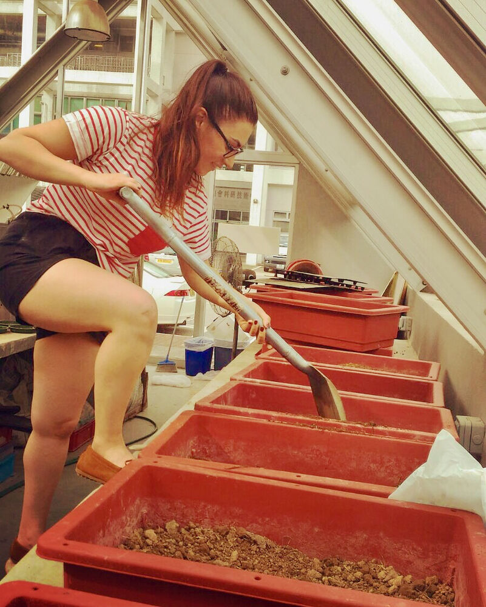

Earlier research
Earthworm Diversity and Climate Impact
DAAD RISE Worldwide research internship, Chinese University of Hong Kong (2016)
Overview
Earthworms are ecosystem engineers. Their burrowing and casting change soil structure, speed up organic matter turnover and influence greenhouse gas fluxes. As rainfall and temperature extremes increase, their role in the carbon and nitrogen cycle becomes more important to understand, especially in fast urbanising subtropical regions.
Methods
- Field surveys across ecosystems and elevations in Hong Kong, with species identification.
- Design and maintenance of PVC soil column experiments under controlled moisture and temperature.
- Simulation of climate scenarios such as longer summers, heavier rainfall and prolonged drought.
Key results
- Documented differences between invasive European Lumbricus and native Amynthas earthworms.
- Observed that invasive Lumbricus mainly enrich the topsoil, while Amynthas improve aeration deeper in the profile.
- Built a reproducible experimental system for climate stress tests on earthworm populations.
Impact
The work contributed to understanding how climate change may alter soil biodiversity and ecosystem services in subtropical regions. It also gave me my first experience of leading my own experiments in an international team.
Figures

Related publications from the host group
Law, M. S. M., & Lai, D. Y. F. (2021). Impacts of wetting–drying cycles on short-term carbon and nitrogen dynamics in Amynthas earthworm casts. Pedosphere, 31(3), 423–432.
doi.org/10.1016/S1002-0160(21)60021-0So, W. L., et al. (2022). Revealing the millipede and other soil-macrofaunal biodiversity in Hong Kong using a citizen science approach. Biodiversity Data Journal, 10, e82518.
doi.org/10.3897/BDJ.10.e82518